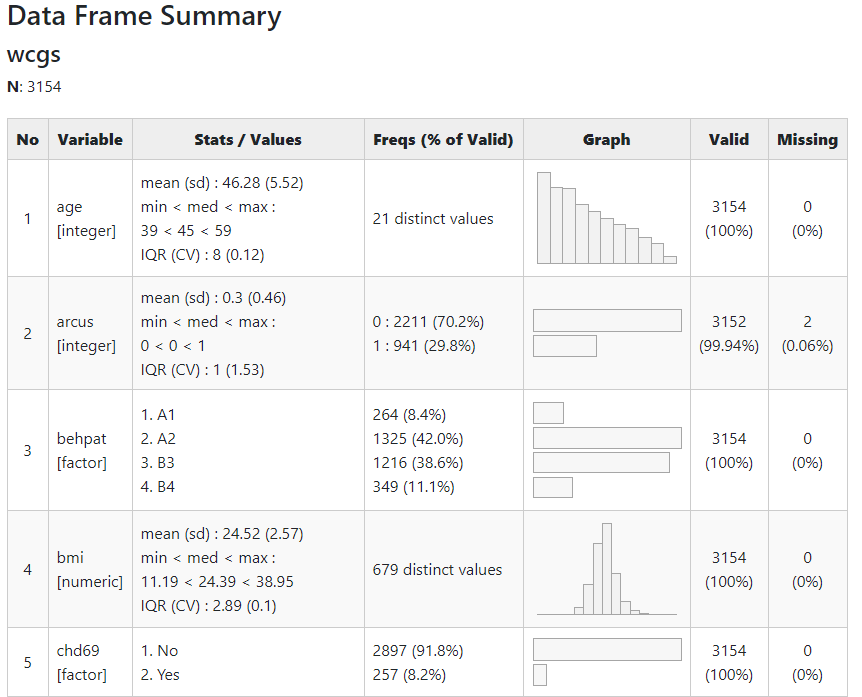

A word in favor of summarytools
Yesterday, I was preparing material for STAT 405 (biostatistics) I am teaching this spring, and was on the prowl for something that is an improvement upon the base R summary() function (it doesn’t even give standard deviations!). The ideal package would also improve upon the base R table() method, for which getting row and/or column percents is a huge pain. Base function xtabs() is great for getting arrays of contigency tables, but no percents. My first stop was the Hmisc package, which has a good summary method via its describe() function.
To demonstrate I use the Western Collaborative Group Survey (WCGS) data from Eric Vittingoff’s excellent book Regression Methods in Biostatistics.
Hmisc::describe(wcgs[,1:5])
## wcgs[, 1:5]
##
## 5 Variables 3154 Observations
## --------------------------------------------------------------------------------
## age
## n missing distinct Info Mean Gmd .05 .10
## 3154 0 21 0.996 46.28 6.256 39 40
## .25 .50 .75 .90 .95
## 42 45 50 55 57
##
## lowest : 39 40 41 42 43, highest: 55 56 57 58 59
## --------------------------------------------------------------------------------
## arcus
## n missing distinct Info Sum Mean Gmd
## 3152 2 2 0.628 941 0.2985 0.419
##
## --------------------------------------------------------------------------------
## behpat
## n missing distinct
## 3154 0 4
##
## Value A1 A2 B3 B4
## Frequency 264 1325 1216 349
## Proportion 0.084 0.420 0.386 0.111
## --------------------------------------------------------------------------------
## bmi
## n missing distinct Info Mean Gmd .05 .10
## 3154 0 679 1 24.52 2.803 20.59 21.52
## .25 .50 .75 .90 .95
## 22.96 24.39 25.84 27.45 28.73
##
## lowest : 11.19061 15.66050 16.87200 17.21633 17.22242
## highest: 36.04248 37.22973 37.24805 37.65281 38.94737
## --------------------------------------------------------------------------------
## chd69
## n missing distinct
## 3154 0 2
##
## Value No Yes
## Frequency 2897 257
## Proportion 0.919 0.081
## --------------------------------------------------------------------------------
It also has a summary method for objects of class formula which ultimately can be used to create tables that are ready for markdown:
summary(chd69~agec, data = wcgs,method='reverse')
##
##
## Descriptive Statistics by chd69
##
## +------------+-----------+-----------+
## | |No |Yes |
## | |(N=2897) |(N=257) |
## +------------+-----------+-----------+
## |agec : 35-40|18% ( 512)|12% ( 31)|
## +------------+-----------+-----------+
## | 41-45 |36% (1036)|21% ( 55)|
## +------------+-----------+-----------+
## | 46-50 |23% ( 680)|27% ( 70)|
## +------------+-----------+-----------+
## | 51-55 |16% ( 463)|25% ( 65)|
## +------------+-----------+-----------+
## | 56-60 | 7% ( 206)|14% ( 36)|
## +------------+-----------+-----------+
It does not work as well as you would expect for additional dimensions, however:
summary(chd69~agec+behpat, data = wcgs,method='reverse')
##
##
## Descriptive Statistics by chd69
##
## +------------+-----------+-----------+
## | |No |Yes |
## | |(N=2897) |(N=257) |
## +------------+-----------+-----------+
## |agec : 35-40|18% ( 512)|12% ( 31)|
## +------------+-----------+-----------+
## | 41-45 |36% (1036)|21% ( 55)|
## +------------+-----------+-----------+
## | 46-50 |23% ( 680)|27% ( 70)|
## +------------+-----------+-----------+
## | 51-55 |16% ( 463)|25% ( 65)|
## +------------+-----------+-----------+
## | 56-60 | 7% ( 206)|14% ( 36)|
## +------------+-----------+-----------+
## |behpat : A1 | 8% ( 234)|12% ( 30)|
## +------------+-----------+-----------+
## | A2 |41% (1177)|58% ( 148)|
## +------------+-----------+-----------+
## | B3 |40% (1155)|24% ( 61)|
## +------------+-----------+-----------+
## | B4 |11% ( 331)| 7% ( 18)|
## +------------+-----------+-----------+
Enter summarytools, immediately appealing in its simplicity. Indeed it only has four primary functions, centered on its wonderful dfSummary() function:
library(summarytools)
## Registered S3 method overwritten by 'pryr':
## method from
## print.bytes Rcpp
## For best results, restart R session and update pander using devtools:: or remotes::install_github('rapporter/pander')

This is the prettiest, most thorough output I’ve come across in a summary function, complete with ASCII bar graphs or histograms representing categorical or quantitative variables. You can prettify it even further in the browser with the view() command:
view(dfSummary(wcgs))

Two-way tables come by way of ctable():
ctable(wcgs$agec,wcgs$chd69)
## Cross-Tabulation, Row Proportions
## agec * chd69
## Data Frame: wcgs
##
## ------- ------- -------------- ------------- ---------------
## chd69 No Yes Total
## agec
## 35-40 512 (94.3%) 31 ( 5.7%) 543 (100.0%)
## 41-45 1036 (95.0%) 55 ( 5.0%) 1091 (100.0%)
## 46-50 680 (90.7%) 70 ( 9.3%) 750 (100.0%)
## 51-55 463 (87.7%) 65 (12.3%) 528 (100.0%)
## 56-60 206 (85.1%) 36 (14.9%) 242 (100.0%)
## Total 2897 (91.9%) 257 ( 8.1%) 3154 (100.0%)
## ------- ------- -------------- ------------- ---------------
A couple drawbacks to summarytools: (1) It is not very compatible with the tidyverse, as you can see with the above use of ctable(). (2) Even the nice 2x2 table is not easily extentable to higher dimensions. You could use by(), but…who wants to do that?
In finishing this post I see Adam Medcalf from Dabbling with Data has a nice post on Hmisc, summarytools, and a couple others as well. For my money, I’ll take summarytools, though I wish its beautiful 2x2 table displays were more easily extended and its ctable() and descr() functions more tidyverseable!